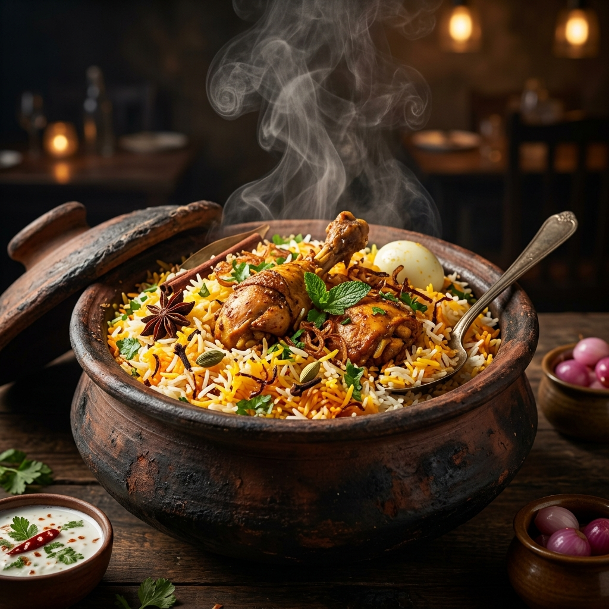
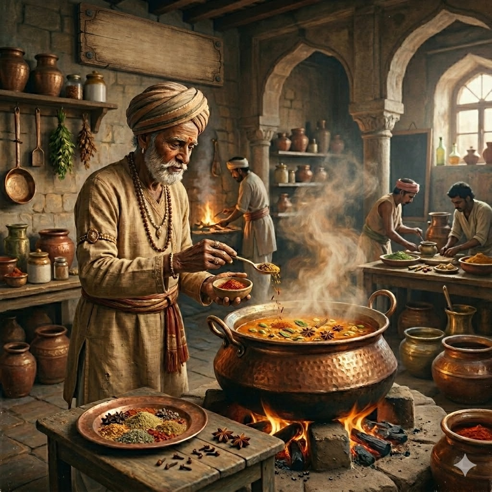

Experience the culinary masterpiece crafted with a royal blend of 21 handpicked signature spices, layered with premium long-grain Basmati rice and slow-cooked to dumpukht perfection. Inspired by the Nizam royal kitchens of Hyderabad and southern Nellore spices.

A royal blend of 21 handpicked spices roasted and ground to perfection.
Traditional dum-pukht style cooking to lock in the rich flavors and aromas.
Using only high-quality Basmati rice, farm-fresh herbs, and select ingredients.
Our signature flavor comes from a delicate balance of 21 premium spices handpicked, roasted, and blended. Hover or click on the key spices to discover their culinary magic.
Gives our rice its signature golden hue and deep aroma.
The sweet-spicy foundation of aromatic Indian cuisine.
Unlocks deep exotic sweetness and complex base flavors.
Bold, sharp, heat-releasing spice from our Southern roots.

Nearly a century ago, Chinnasami Selvam was widely known in Nellore as "Thalaivar-Raja" (Thalairaj) for his outstanding culinary skills. Driven by ambition, the young cook migrated to Hyderabad, earning a coveted place in the kitchen of the Nizam of Hyderabad.
For 17 glorious years, he worked alongside master chefs, creating custom formulations that delighted the royal court. When he eventually returned to Nellore to settle down, he carried with him the secret blending recipes he had crafted for the Nizam.
By blending the delicate royal spices of Hyderabad with the fiery heat of Nellore and the traditional dum baking of his Tamil heritage, he perfected the legendary 21 Spice Masala. That recipe is passed down intact, bringing royalty to your table today.
Everything you need to know about our ingredients, spice blends, delivery channels, and catering options.
Most standard biryanis rely on mass-produced garam masala with 5 to 8 ingredients. Our Biryani is flavored with 21 distinct spices, including Kashmiri Saffron, stone flower (kalpasi), star anise, and Nellore black pepper. They are roasted in small batches to preserve essential oils and prevent bitterness.
'Neruppu' means Fire in Tamil. Our Neruppu Chicken 21 is a boneless starter tossed in a high-heat glaze made of ground red chilies, pepper, curry leaves, and a touch of tamarind. It represents the spicy, bold Southern-style preparation from our roots.
You can browse our menu and add items to your tray right here! Once you are ready, click "Place Order". Since we partner with leading aggregators and direct networks, the app compiles your cart details and directs you to our official portal (Linktree) to choose your preferred ordering platform.
Yes! We offer bulk catering options for parties, corporate events, and family gatherings. Please contact us via phone or email, and we can curate a custom menu suited to your guest size.